몰려오는 몬스터를 함께 처치해 도시를 지키는 협동 게임입니다. 하지만 점수는 개인 경쟁 — 힘을 합쳐 잡되, 보상은 나눠 가집니다. 그래서 슬쩍 빠지는 무임승차의 유혹이 생깁니다. 규칙 · 진행 · 대시보드 사용법 · 플레이어 플레이 방식을 모두 담았습니다.
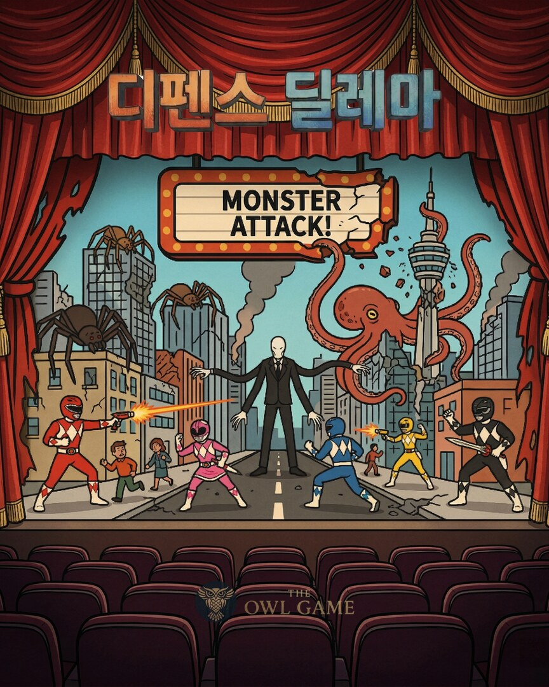
게임을 소개할 때 이 포스터를 빔/모니터에 띄우거나, 위 버튼으로 내려받아 홍보·안내 자료로 활용하면 좋습니다.
아래 세 가지만 있으면 진행할 수 있습니다.
도입 멘트(예시) — "사이비 단체가 괴물을 풀어 도시를 습격합니다. 협동해 몬스터를 쓰러뜨리고 포인트를 나눠 가지세요. 단, 비열한 무임승차자가 있을 수 있습니다."
몬스터는 대기열(참가 인원에 따라 4~5칸: 6~9명 4칸 / 10~12명 5칸)에 줄지어 나타납니다. 참가자들은 라운드마다 행동을 하나 골라 몬스터를 공격합니다. 여러 명이 같은 몬스터를 공격하면 숫자가 합산되어 더 강한 적도 잡을 수 있지만, 보상 포인트는 공격한 인원이 나눠 가집니다. 게임이 끝났을 때 포인트가 가장 많은 사람이 우승합니다(동점이면 누적 데미지가 큰 쪽).
인원에 따라 달라지는 것 — 참가 인원에 따라 대기열 칸 수(6~9명 4칸 / 10~12명 5칸)와 몬스터 총 수(≈ 인원×3)만 달라집니다. 카드·전투·점수 분배 등 나머지 규칙은 인원과 무관하게 동일합니다. 플레이어에게도 이 점을 안내해 주세요(현재 방의 칸 수는 플레이어 화면 '정보' 탭에 표시됩니다).
GM이 방을 만들면 방 코드(예 A3F82)가 발급되고, 그 코드를 받은 참가자만 입장합니다.
참가자는 닉네임을 등록하고 방 코드를 받으면 바로 입장할 수 있습니다. GM이 따로 "준비 상태"로 만들 필요는 없습니다. 입장하면 초기 상태로 대기합니다.
관리 패널은 지금 다루는 방 하나를 보여줍니다. 새로고침해도 그 방이 유지되며, 전체 방 목록은 보이지 않으니 발급받은 코드를 기록해 두세요. 다른 방을 만들거나 기존 방 코드로 들어가려면 패널 상단의 [← 다른 방 만들기/입장]을 누릅니다.
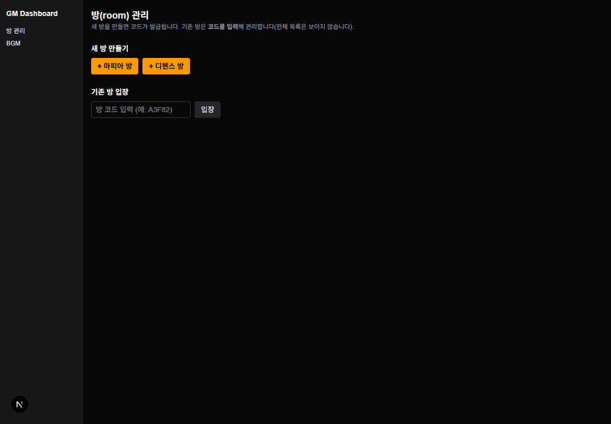
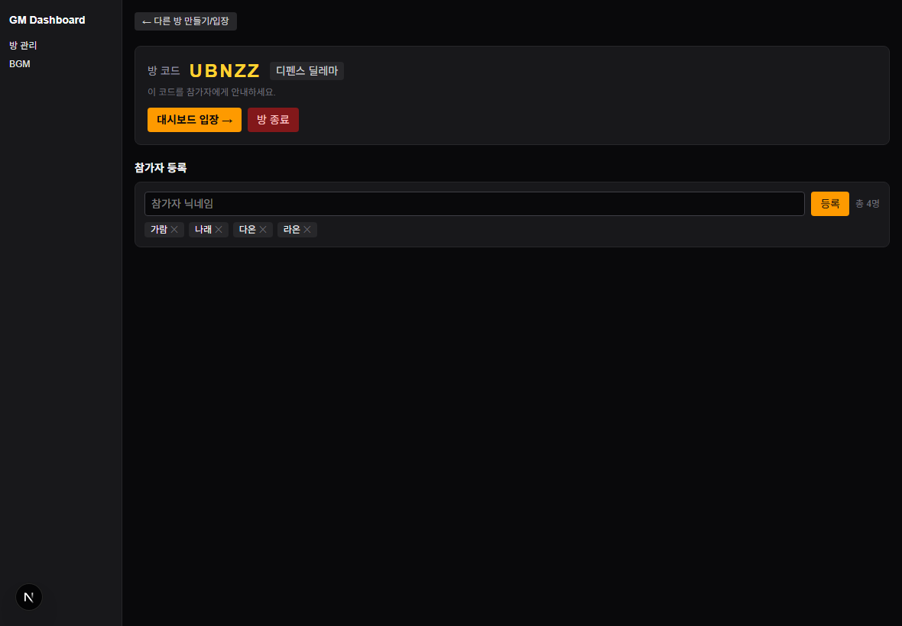
방 관리에서 그 방의 [대시보드 입장]을 누르면 아래 화면이 열립니다. 화면에는 카운트다운(타이머), 라운드 관리, 점수 관리가 보입니다. 버튼은 화면 흐름대로 따라가면 됩니다.
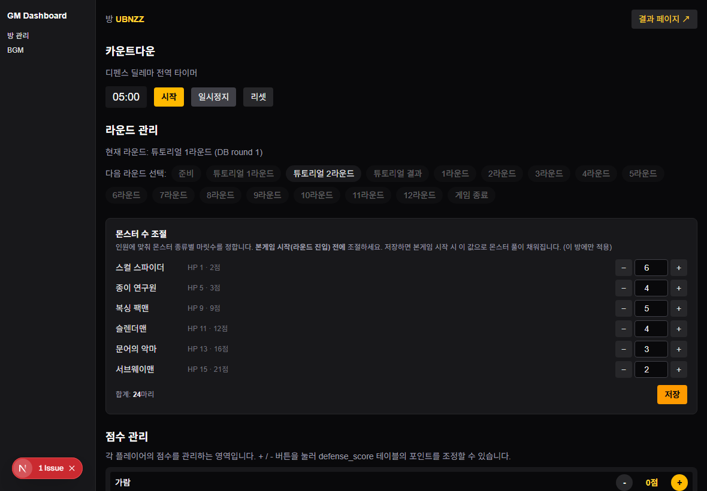
진행은 버튼 하나입니다. '진행'의 [다음] 버튼을 누르면 단계가 한 칸씩 넘어가고, 버튼 이름이 다음 단계 이름으로 바뀝니다: 튜토리얼 1라운드 시작 → 튜토리얼 1라운드 결과 보기 → 튜토리얼 2라운드 시작 → 튜토리얼 2라운드 결과 보기 → 튜토리얼 점수 발표 → 본게임 준비 → 1라운드 시작 → 1라운드 결과 보기 → … → 4라운드 결과 보기 → 중간 점수 발표 → 5라운드 시작 → … → 8라운드 결과 보기 → 중간 점수 발표 → 9라운드 시작 → … → 12라운드 결과 보기 → 최종 결과 발표. 「○라운드 시작」을 누르면 타이머가 자동으로 시작되고 참가자 폰에 행동 탭이 열립니다. 「결과 보기」를 누르면 정산이 실행되고 보드에 결과가 공개됩니다(확인창에 미제출 참가자 수 표시). 잘못 넘겼으면 [↩ 되돌리기]로 직전 라운드의 행동 단계로 돌릴 수 있습니다(아래 ④).
참가자가 모두 입장하면 결과 중계 페이지(대시보드의 [보드 ↗])를 빔/모니터에 띄워 두고, 대시보드 맨 위 [룰 영상] 패널에서 [▶ 보드에서 재생]을 누릅니다. 빔 화면에 규칙 영상(약 4:06)이 소리와 함께 전체 화면으로 나옵니다. 영상이 끝나면 자동으로 원래 화면으로 돌아가고, 그다음 튜토리얼 1라운드를 시작합니다.
참가자 폰 설정(준비 단계에 정하기 · 기본 켜짐) — [참가자 폰 로그 탭 보이기]: 초보 참가자면 켜고, 지니어스 식 숙련자 판이면 끕니다. [몬스터 도감 '남은 수' 보이기]: 끄면 도감에 종류별 남은 마릿수가 보이지 않습니다.
대시보드는 준비 상태로 열립니다. 참가자가 모두 입장하면 '진행'의 [튜토리얼 1라운드 시작]을 누르세요 — 그 순간의 입장 인원으로 몬스터 구성이 정해지고 게임이 시작됩니다. 튜토리얼 2라운드를 반드시 먼저 진행합니다. 흐름(행동 고르기 → 전투 처리)을 익힌 뒤 본게임을 시작하세요.
본게임은 총 12라운드이며, 각 라운드는 기본 5분(타이머 시간 조정 가능)입니다. 한 라운드는 아래 흐름으로 진행됩니다.
정산 타이밍(중요) — 전투 정산은 「결과 보기」를 누를 때 이뤄집니다. 보드는 결과 공개가 끝나도 그 화면에 머무르니, 해설을 마친 뒤 「다음 라운드 시작」을 누르세요.
몬스터가 처치되었는지, 총 몇의 피해를 받았는지만 공개되고, 누가 어떤 행동을 했는지·어느 카드를 어디에 냈는지는 공개되지 않습니다. 4라운드와 8라운드가 끝난 후 결과 중계 페이지를 통해 중간 점수가 공개됩니다.
12라운드가 끝나거나, 모든 몬스터가 처치/도망쳐 더 이상 적이 없으면 게임이 종료됩니다. 후자는 자동입니다 — 그 라운드 정산 때 대기열과 남은 몬스터가 모두 0이면 「결과 보기」를 눌렀을 때 결과 화면 다음 버튼이 바로 「최종 결과 발표」가 되고(대시보드 안내 + GM 조작 기록), 보드는 마지막 전투 결과 → 최종 점수 발표를 재생합니다. 조기 종료 뒤에는 되돌리기가 되지 않습니다. 화면에 포인트 순위가 표시됩니다(동점 시 누적 데미지가 큰 쪽 우선, 그래도 같으면 공동 순위).
[📲 참가 QR](방 관리·대시보드 공통)을 누르면 큰 QR과 방 코드가 새 창에 뜹니다. 빔에 띄우거나 노트북을 돌려 보여 주세요 — QR을 찍으면 방 코드가 채워진 입장 화면이 열려 닉네임만 적으면 됩니다(중간 합류·재접속도 같은 QR).
GM 대시보드에서 [보드 ↗](또는 결과 화면 열기) 버튼을 누르면 그 방의 디펜스 중계 화면이 새 탭으로 열립니다. 빔/모니터에 띄워 참가자 전체에게 보여주세요.
보드는 대시보드의 현재 단계 화면을 그대로 보여 줍니다. 준비: 큰 참가 QR + 방 코드 + 입장 인원 / 라운드: 대기열 + 카운트다운 / 결과: 몬스터별 1.4초 간격 순차 공개(처치·피해·도망) / 점수: 꼴찌부터 공개. 결과 공개가 끝나도 저절로 넘어가지 않으며, 결과·점수·준비 단계에는 타이머가 없습니다. 서버와 연결이 끊기면 마지막 화면이 유지되고 "다시 연결하는 중…" 배지만 뜹니다.
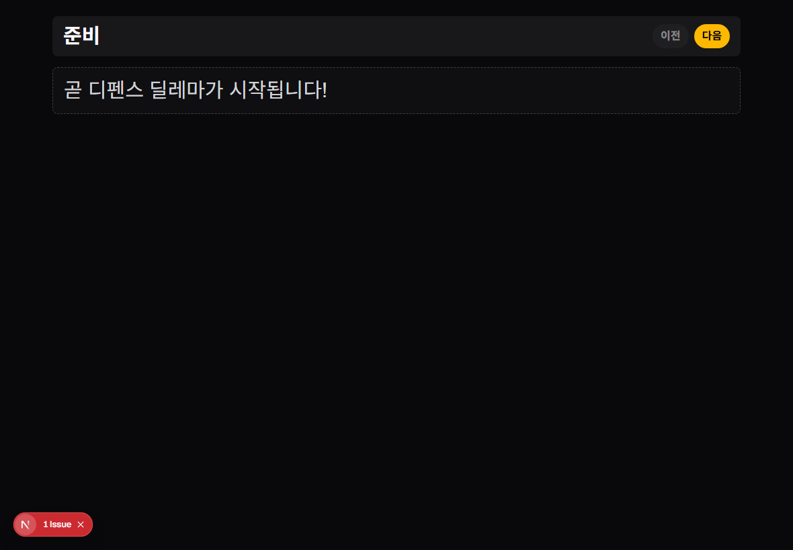
참가자는 플레이어 입장 페이지 ↗에서 방 코드 + 닉네임을 입력해 들어옵니다(아래 휴대폰 화면 참고). 입장하면 바로 게임에 참여합니다.
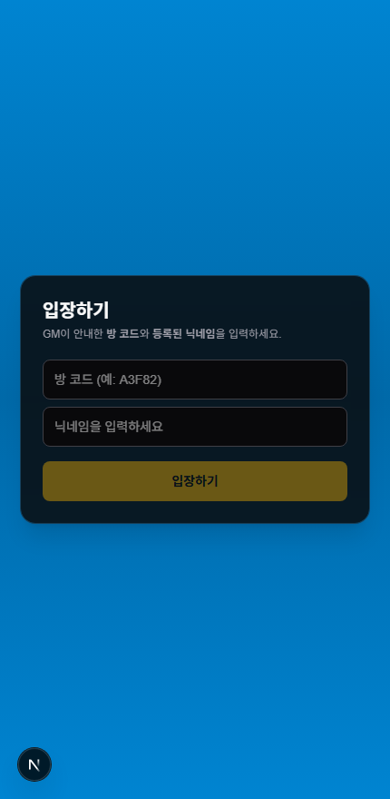
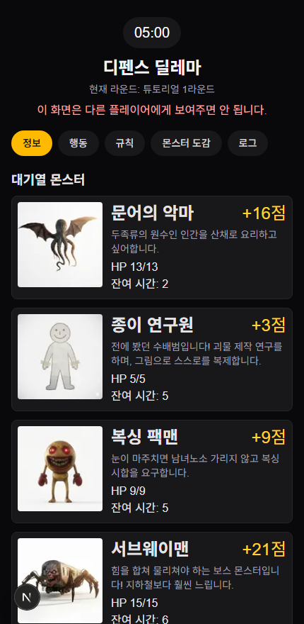
플레이어 화면은 정보 · 행동 · 규칙 · 몬스터 도감 · 로그 탭으로 이뤄져 있습니다. 참가자는 탭을 오가며 상황을 확인하고 행동을 고릅니다(아래는 주요 4개 탭).
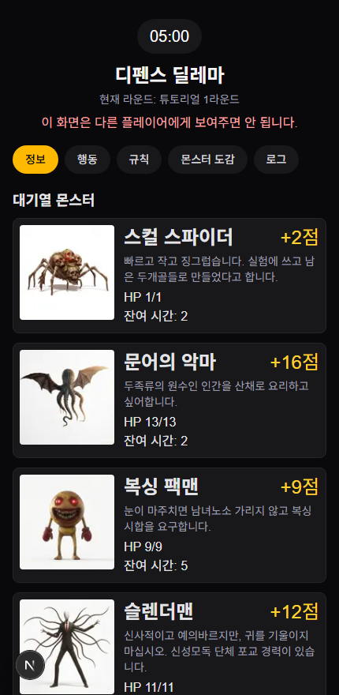
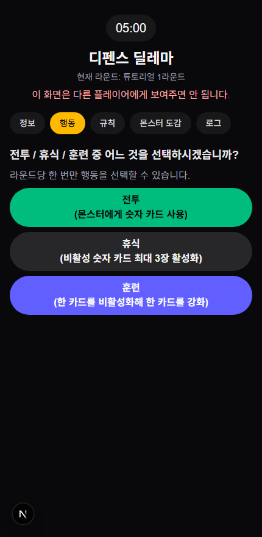
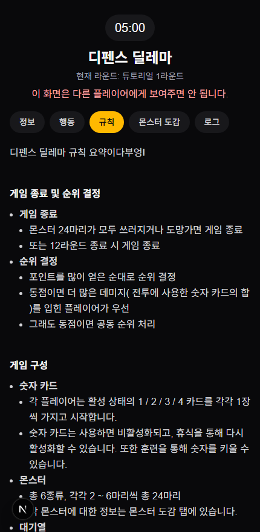
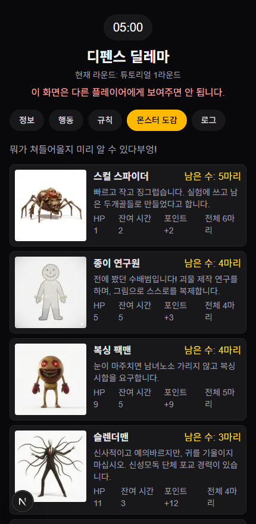
로그 탭에서는 그 방의 라운드별 전투 결과 기록을 다시 볼 수 있습니다.
행동 탭의 상태 — 확정하면 "제출됨 · 제출한 행동은 바꿀 수 없습니다"가 뜹니다(낙장불입 — 다시 고르기 없음, 라운드가 바뀌면 새로 고릅니다).
연결이 끊기면 화면이 사라지지 않고 마지막 화면 위에 "다시 연결하는 중…" 배지만 뜹니다(자동 재시도). GM이 참가자를 삭제하면 그 휴대폰에 즉시 "참가자 명단에서 제외되었습니다" 안내가 뜨고, 다시 등록하면 같은 방 코드·닉네임으로 재입장할 수 있습니다. 종료된 방은 "종료된 방입니다" 배너가 뜨고 기록만 볼 수 있습니다.
각자 숫자 카드 1·2·3·4를 한 장씩 가지고 시작합니다. 라운드마다 아래 세 행동 중 하나만 고릅니다.
| 행동 | 내용 |
|---|---|
| 전투 | 대기열 몬스터 1마리를 고르고 활성 카드 1장을 제출. 제출한 카드는 비활성화됩니다. 같은 몬스터에 여러 명이 내면 숫자가 합산됩니다. |
| 휴식 | 비활성 카드를 최대 3장까지 다시 활성화합니다. |
| 훈련 | 활성 카드 1장을 비활성화하고, 아무 카드 1장의 숫자를 영구히 +1 합니다. |
누가 무엇을 했는지, 어느 카드를 어디에 냈는지는 비공개입니다. 협동해야 강한 적을 잡지만, 보상은 나뉘므로 "남이 잡겠지" 하고 빠지는 무임승차가 생깁니다 — 이것이 게임의 딜레마입니다.
| 몬스터 | HP | 잔여시간 | 포인트 | 마릿수 | 설명 |
|---|---|---|---|---|---|
| 스컬 스파이더 | 1 | 2 | +2 | 6 | 빠르고 작고 징그럽다 |
| 종이 연구원 | 5 | 5 | +3 | 4 | 그림으로 자신을 복제 |
| 복싱 팩맨 | 9 | 5 | +9 | 5 | 눈 마주치면 복싱 시합을 요구 |
| 슬렌더맨 | 11 | 3 | +12 | 4 | 신성모독 단체 포교 경력 |
| 문어의 악마 | 13 | 2 | +16 | 3 | 인간을 산 채로 요리하려 함 |
| 서브웨이맨 | 15 | 6 | +21 | 2 | 보스 — 힘을 합쳐야 처치 가능 |
HP = 처치에 필요한 숫자 합 / 잔여시간 = 도망까지 남은 라운드 / 포인트 = 처치 시 나눠 갖는 보상.
| 인원 | 대기열 | 총 | 스컬 | 종이 | 복싱 | 슬렌더 | 문어 | 서브웨이 |
|---|---|---|---|---|---|---|---|---|
| 6 | 4 | 18 | 4 | 3 | 4 | 3 | 2 | 2 |
| 7 | 4 | 21 | 5 | 3 | 4 | 4 | 3 | 2 |
| 8 | 4 | 24 | 6 | 4 | 5 | 4 | 3 | 2 |
| 9 | 4 | 27 | 7 | 4 | 6 | 5 | 3 | 2 |
| 10 | 5 | 30 | 7 | 5 | 6 | 5 | 4 | 3 |
| 11 | 5 | 33 | 8 | 5 | 7 | 6 | 4 | 3 |
| 12 | 5 | 36 | 9 | 6 | 7 | 6 | 5 | 3 |